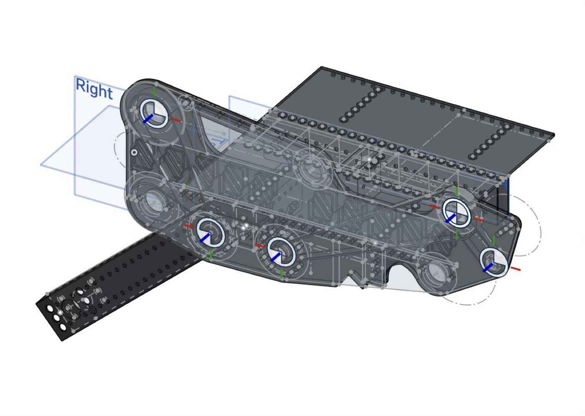
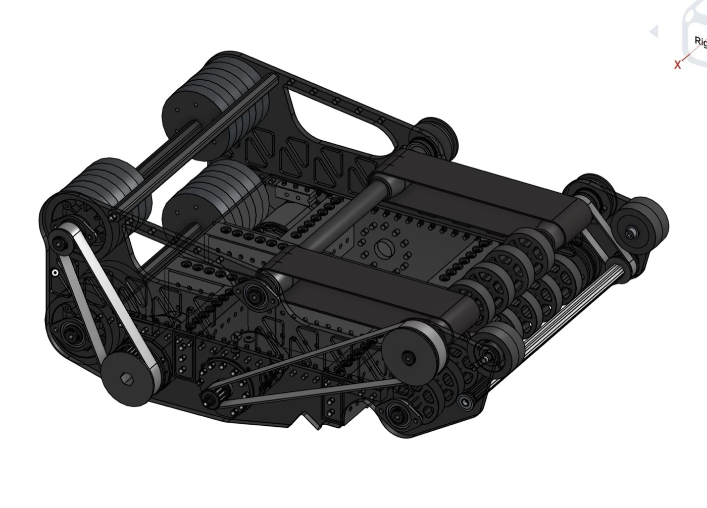

Until that file exists, the link above will 404. You can also
change the “MY RESUME” nav item to open the PDF directly.
Courses
Classes completed at UBC so far.
Mathematics
Course Code
Course Name
MATH 200
Calculus III
MATH 220
Mathematical Proof
MATH 221
Matrix Algebra
Physics
Course Code
Course Name
PHYS 157
Introductory Physics for Engineers I
PHYS 158
Introductory Physics for Engineers II
PHYS 159
Introductory Physics Laboratory for Engineers
PHYS 170
Mechanics I
Applied Science
Course Code
Course Name
APSC 100
Introduction to Engineering I
APSC 101
Introduction to Engineering II
APSC 160
Introduction to Computation in Engineering Design
Data Science
Course Code
Course Name
DSCI 100
Introduction to Data Science
FRC Shooter Subsystem
Design Lead & CAD · FRC Team 5419 · 2024 FIRST Robotics Competition
Objective: Design a shooter that takes foam rings
from the intake and launches them into an elevated goal with
consistent accuracy, and that can also reverse to deposit a ring
into a vertical trapdoor.
Example Activities: I was the sole designer and
CAD lead in Onshape, and supervised fabrication through the build
season. Prototypes were laser-cut from plywood; production parts
were CNC-cut from polycarbonate. The main problem was shot
consistency: early versions misfired because the ring entered at
varying positions. I narrowed the indexing channel so the ring
stayed compressed against both walls, lined the channel with PTFE
to remove friction variation, and switched the index drive to
polybelt. For trapdoor mode, free-spinning wheels let the shooter
pivot into place, and extra rollers pushed the ring through when
it was catching on the interior. Teammates handled wiring; a
separate subteam handled programming.
Outcome: Consistent short- and long-range shots
under competition conditions, reliable trapdoor deposits, and a
mechanism that fit the robot’s space and pivot constraints.
Six weeks to a competition-ready shooter; six more weeks of
iteration after that. Robot ultimately ranked 11th in California
out of almost 300 teams
CAD

Transparent CAD view: internal roller arrangement, polybelt
routing, and pivot mount. Modeled in Onshape.

Assembly render: polybelt drive, flywheel rollers, and
polycarbonate side panels.
How it works
Rings enter through back-end rollers and are drawn in by
polybelts. Beam breaks track position along the indexing channel.
Two front flywheels spin up, then the polybelt feeds the ring
between them for launch. A PTFE lining keeps friction consistent
from shot to shot. In trapdoor mode, the roller system reverses
to deposit the ring through the opening.
Design iteration
Early prototype. First plywood build used to check whether
dual-roller compression could feed a ring.
Later prototype, slow motion. A tighter indexing path and
more consistent ring feed before the polycarbonate version.
Automated Optical Stage Control
Status: Ongoing / In Development
I am assembling and developing software for a set of automated
stages that provide high-precision control of optical elements
on a light table. A central challenge is ensuring that the
system can repeatedly return to a known position with
approximately 30-micron precision. This project involves
integrating mechanical components, electronics, motor control,
position sensing, and firmware.
We are using a Nema 8 stepper motor paired with a TMC2209 motor
driver. TMC 2209 allows for a very small step size alongside
quiet, smooth operation. Most importantly, it supports a UART
serial interface. This connection enables the driver to provide
feedback to the microcontroller, allowing it to calculate the
load on the motor by reading the back-EMF. This telemetry
powers sensorless stall detection via StallGuard, which is
critical for our system since we do not use physical limit
switches.
However, during testing, I found that when StallGuard triggers
and the software halts the motor, the system does not actually
stop at the absolute end of the dynamic range. This discrepancy
is likely caused by a physical bounce when the motor operates
at higher velocities.
To solve this, I am working on programming the motor driver
itself to trip a physical pin from low to high the moment
StallGuard triggers. This tripped pin should stop the driver
immediately and deliver a more precise home position. If this
hardware pin method does not resolve the issue, I am
considering an empirical, brute-force approach: since the
initial trigger timing leaves the motor within a couple hundred
steps of the true home, I can simply command the motor to move
very slowly toward the endstop. Empirically, I know that this
slow creep leaves the mechanism perfectly flush with the home
position.
Project three
Coursework or experiment · 2025
Objective: A smaller project is fine. Say what
you built and what you learned.
Example Activities: Walk through the main
technical steps in plain language.
Tools/Concepts/Skills: Add the stack here
Fig. 1 Replace this image with a screenshot or diagram.
Organization one
Role title · City · 2025–2026
Overview: One or two sentences on the team and
what you were hired to do.
Example Activities: Replace with two or three
concrete contributions. Prefer results over duties.
Tools/Concepts/Skills: Add tools from this role
Organization two
Role title · City · 2024–2025
Overview: Short context for the organization and
your role.
Example Activities: What you shipped, supported,
or learned.